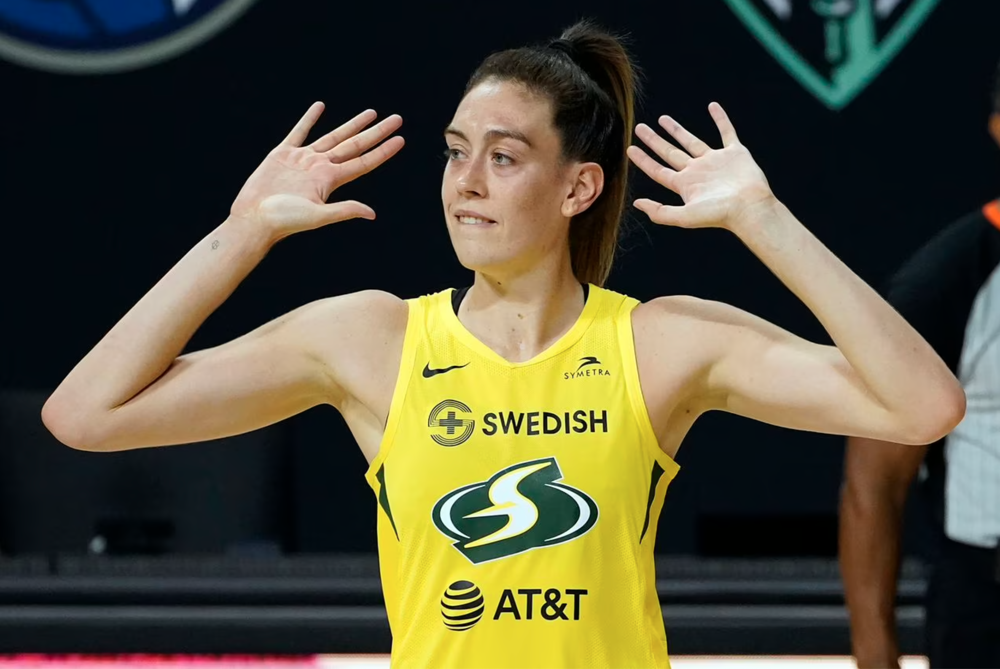

Clustering NBA and WNBA Players
Any attempt by an ESPN or Sportscenter account to post WNBA highlights is routinely met with meme comments concerning the lack of entertainment value. But there’s still a ball, a hoop, and players dedicating their lives…